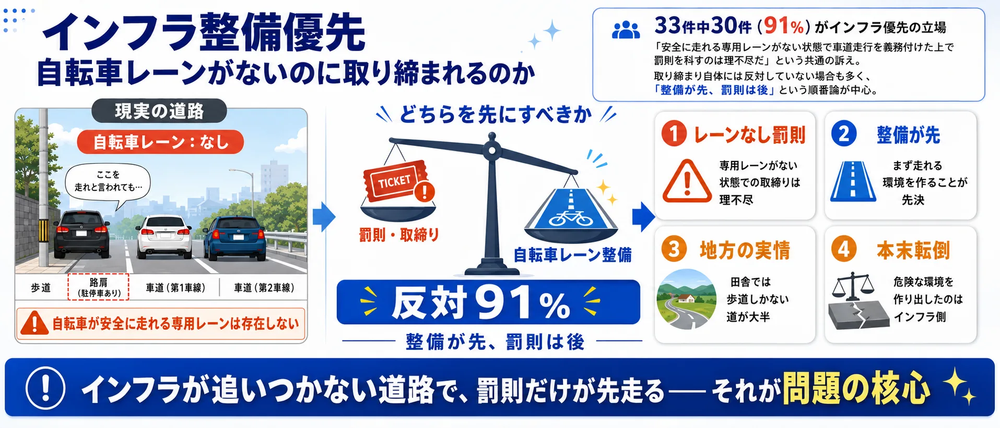
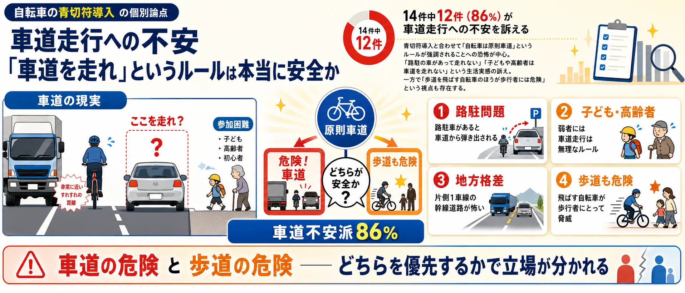
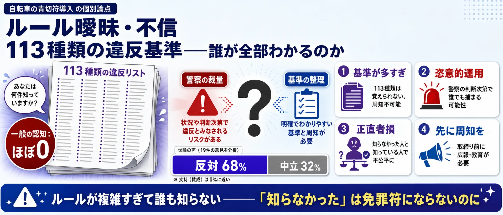

論点①
取締り強化賛成 — 「危険な自転車に青切符は当然か」
信号無視・ながらスマホ・歩道の無謀走行への抑止力として青切符を歓迎。SNS上の37件全員が取締り強化を支持する唯一の論点。
支持：歩行者の安全のため抑止力が必要
焦点：どの違反行為を対象にするか

危険運転を減らす青切符か、道路整備が追いつかないままの罰則強化か？
Yahooリアルタイム検索で取得したSNS投稿を、取締り強化賛成、インフラ優先、車道走行への不安、免許制要求などの論点で整理したビューです。世論調査ではありません。
商店街の店主と自転車通勤の会社員——同じ道を使う二人が、青切符をめぐってそれぞれの怖さと願いをぶつけ合います。
※ この漫画はSNS上の代表的な意見をもとに構成したフィクションです
「自転車の青切符」の議論は「賛成か反対か」だけではありません。取り締まりの是非・インフラ整備の順番・車道走行の危険性・免許制の必要性・ルールの曖昧さ——5つの論点を整理してから投票に進んでください。
取締り強化賛成 — 「危険な自転車に青切符は当然か」
信号無視・ながらスマホ・歩道の無謀走行への抑止力として青切符を歓迎。SNS上の37件全員が取締り強化を支持する唯一の論点。
インフラ整備優先 — 「自転車レーンがないのに取り締まれるか」
33件中30件（91%）が反対。専用レーンなしの罰則先行は理不尽という立場。「整備が先、取締りは後」という順番論が中心。

車道走行への不安 — 「「車道を走れ」というルールは安全か」
14件中12件（86%）が不安を訴える。路駐・トラック・子ども・高齢者の問題。歩道を飛ばす自転車への歩行者の怒りとも交差する。

免許制要求 — 「罰則の前に、ルールを教えるべきでは？」
16件。取締り支持12%・中立44%・反対44%と最も拮抗。「知らずに違反させる前に免許・講習を義務化すべき」という提案型の論点。

ルール曖昧・不信 — 「113種類の違反基準——誰が全部わかるか」
19件中13件（68%）が反対・不信。「何が違反かわからない」「警察の恣意的運用が怖い」。基準の整理と周知なしでの取締りに強く反対。

使い方: 5つの論点を把握してから、次の投票で「自分が一番気になる論点」を選んでください。
2024年に道路交通法が改正され、自転車の違反に「青切符」（反則金）が導入されます。取り締まりを強化すべきか、まずインフラ整備が先か。あなたが最も気になる論点はどれですか？
1あなたが最も気になる論点をタップ （全2問）
※ 世論調査ではありません。投票は匿名で集計され、サーバーに保存されます。
中心の「自転車の青切符」を6つの論点セクターが囲みます。扇の大きさは投稿数、中心からの距離は意見の強さ（外側ほど強い主張）、点の色はスタンス（赤=取締り賛成 / 青=反対・インフラ優先 / 灰=中立）。点をクリックするとXポストを開きます。
信号無視・ながらスマホ・歩道の無謀走行など、自転車の危険行為を止めるために取り締まりは当然という立場。「歩行者が怖い思いをしている」という視点から、青切符による制裁強化を支持します。
「安全に走れる自転車専用レーンがないのに、車道を走れというのは無理だ」という立場。インフラ整備なしの罰則強化は自転車利用者への一方的な押しつけで、本末転倒という批判です。
青切符と合わせて「自転車は原則車道」というルールが強調されることへの不安。「子どもを車道に出せるか」「路駐があって走れない」といった現実的な危険を訴える声があります。一方で、歩道を飛ばす自転車が危険だという歩行者目線も存在します。
最多の論点。「青切符だけでは甘い」「自転車にも免許制度か事前講習を義務付けるべきだ」という主張です。標識を理解していない自転車利用者が多いため、罰則より先に教育が必要という考え方です。
「何が違反になるのか現場でわからない」「警察が恣意的に取り締まるのではないか」という不信感が中心。「113種類もの違反基準は覚えられない」「点数稼ぎ目的ではないか」という批判です。反対派の多数がこの立場を取ります。
マナー違反や危険走行を取り締まることで、歩行者・社会を守るために青切符は必要だとする立場。
自転車レーンなどのインフラが整備されていない状況で、取り締まりだけを先行させることへの批判。
車道走行を強制されることへの恐怖と、歩道を飛ばす自転車への批判が交錯する論点。
知識のない状態での取り締まりより、免許制・事前講習でルールを学ばせるべきとする立場。
何が違反か分かりにくく、警察の恣意的運用を懸念する立場。取り締まりの公正性に疑問。
複数の論点が混在する投稿や、日常報告・日記的な内容など。
2024年に成立した改正道路交通法により、自転車の交通違反にも「青切符」（交通反則通告制度）が導入されることになりました。16歳以上を対象に、信号無視や一時不停止、ながらスマホなどの違反に対して反則金が科されます。これまで自転車の違反は刑事罰の対象となる「赤切符」しかなく、実際にはほとんど検挙されてこなかったため、取り締まりの実効性を高める狙いがあります。
賛成する立場からは、歩道での危険走行や事故の増加を踏まえ「歩行者の安全を守るために必要」「ルールを守らない自転車が多すぎる」という声が上がっています。一方で反対・慎重な立場からは、「自転車レーンなどのインフラ整備が先ではないか」「車道走行を強いられると、かえって事故が増える」「違反の基準が曖昧で現場が混乱する」といった懸念が示されています。
また、そもそも自転車にはルールを学ぶ機会が免許制度のように用意されていないため、「取り締まりの前に講習や免許制が必要だ」という意見も一定数あり、単純な賛否では割り切れない構図になっています。
危険な走行やマナー違反を取り締まり、歩行者や周囲の安全を確保するために必要であるとする立場。
安全に走れるインフラ（自転車レーンなど）が十分にない中で、取り締まりだけを先行させることに納得がいかない立場。
車道の狭さや車の至近走行の危険から車道原則に恐怖を感じ、結果として歩道通行も狭められることに反対する立場。
標識を理解しない運転手が多いため、反則金のみならず原付のような免許制度や事前講習を導入すべきとする立場。
違反の成立基準が現場で分かりにくいことや、警察の点数・反則金集め目的ではないかという不信感による反対。
罵倒、単なる怒り、事実誤認など、そのままでは記事化に注意が必要な反応。
| 分類 | 自転車 取締り 強化 | 自転車 青切符 おかしい | 自転車 青切符 やりすぎ | 自転車 青切符 インフラ | 自転車 青切符 免許 | 自転車 青切符 反対 | 自転車 青切符 当然 | 自転車 青切符 賛成 | 自転車 青切符 車道 怖い | 自転車 青切符 道路 | 合計 |
|---|---|---|---|---|---|---|---|---|---|---|---|
| 取締り強化賛成・マナーや危険運転の改善を期待 | 10 | 0 | 1 | 0 | 1 | 0 | 10 | 5 | 0 | 7 | 34 |
| インフラ未整備への不満・専用レーンの設置が先決 | 0 | 1 | 0 | 17 | 1 | 1 | 0 | 0 | 0 | 11 | 31 |
| 車道走行への不安・原則車道は事故を増やすと反対 | 4 | 2 | 0 | 0 | 1 | 1 | 0 | 0 | 2 | 4 | 14 |
| 制度が不十分・青切符に留まらず自転車も免許制にすべき | 1 | 4 | 0 | 0 | 29 | 2 | 0 | 0 | 1 | 4 | 41 |
| ルールが曖昧・現場の混乱や取り締まりへの不審で反対 | 1 | 4 | 1 | 0 | 0 | 3 | 0 | 0 | 1 | 2 | 12 |
| その他・分類保留 | 14 | 8 | 1 | 0 | 0 | 8 | 0 | 2 | 2 | 10 | 45 |
| 分類 | 賛成（取締り強化） | インフラ優先 | 車道走行懸念 | 免許制要求 | 混乱懸念 | その他 | 合計 |
|---|---|---|---|---|---|---|---|
| 取締り強化賛成・マナーや危険運転の改善を期待 | 34 | 0 | 0 | 0 | 0 | 0 | 34 |
| インフラ未整備への不満・専用レーンの設置が先決 | 0 | 30 | 0 | 0 | 0 | 1 | 31 |
| 車道走行への不安・原則車道は事故を増やすと反対 | 0 | 0 | 13 | 0 | 0 | 1 | 14 |
| 制度が不十分・青切符に留まらず自転車も免許制にすべき | 0 | 0 | 0 | 41 | 0 | 0 | 41 |
| ルールが曖昧・現場の混乱や取り締まりへの不審で反対 | 0 | 0 | 0 | 0 | 12 | 0 | 12 |
| その他・分類保留 | 0 | 0 | 0 | 0 | 4 | 41 | 45 |
 憲法改正論議
憲法改正論議 部活動の地域移行
部活動の地域移行 高齢者免許返納
高齢者免許返納